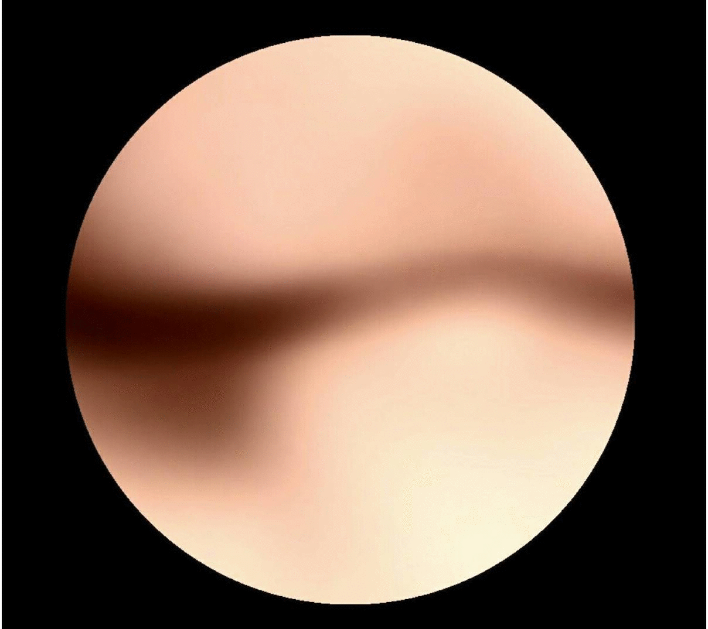

嗨李杰，介紹一下自己吧，你是做什麼的？
為了賺錢， 我打工教畫畫 教不同的項目像是鉛筆跟炭筆素描，水彩跟油畫等等。我喜歡創作但是對藝術家來說比較難賺錢。
你怎麼形容你自己？有什麼人生目標嗎？
我會這麼說吧，我想把亞洲人生活的視角帶到國際上，讓他們能夠體驗我們的思考 生活方式，在國際的藝術圈受到關注是我的目標。關於我自己則是進展緩慢，需多加努力。
你對於台灣的藝術與設計有什麼看法？
我想身為台灣人，亞洲人。面臨到的是更複雜的道德問題，西方文化對我們的衝擊，以及歷史地位。我們需要找到自己的方式而步步是一昧學習西方，來進行創作，其實台灣有很多當地的藝術家很珍惜我們自己本地的創作，但我覺得沒有一個可以完全展現自我的平台。
那有哪些特別的地方嗎？
我不確定這是不是“特別”但我想，大概是過於壅擠 繁華 且更零件化的社會吧。
我的意思是說每個人的特質，個人感情被消除，為了一個巨大的社會體系，我們更重視功能。一個人的價值只剩下功能，尤其對於藝術家來說更是一個很大的障礙。
你的作品有被台灣的文化影響嗎？
當然，特別是台灣的宗教文化，沒有一個特定的信仰，所以我會使用不明顯的語言，或者顯示反映我們文化的模糊感。
可以給我們看一看你的作品嗎？
好啊，等一下
這個作品叫做"The cell"


透過性行為，我想我把屬於我的一部分，分離了出去，當中包含了我的愛的幻想，生命的意念，身體的一部分…等，分給了另一個人，像是在進行細胞分裂的細胞一樣，她也擁有了一部分的我，帶著我繼續生活。 螢幕的圓形，是在模仿顯微鏡的視窗，透過模糊的身體交疊，呈現近似細胞進行中的樣貌，將自己當成〝人類整體〞，的最小單位研究、觀察。 倘若細胞分裂是為了 整體/個體 的存活，我在其中扮演的是什麼樣的角色，是為了什麼存在，如果意識在當中傳遞，傳遞的又是什麼，〝人類/個體〞的樣貌會是什麼，正走向何處，在自體細胞研究當中，我試著尋找和窺視。
身為台灣藝術家，還有哪些事情是你覺得有阻礙的？
另一個問題就是“政治正確性”，也就是說在說我們的能說的話和做的事，被侷限在某個範圍（政治正確)(同一種美學）。“美學”有一個特定的術語，人們認為要走一條特定的道路，我們不能違背它，否則我們會說我們還沒有做好準備。
那你認為別的國家的人對台灣設計有偏見或想法？
台灣的設計深受日本設計的影響，可能是因為台灣是他們的殖民地50年。 隱含的美學，隱藏的感覺和較少直接強調藝術家想要展現的東西。
挺有意思的。我知道你也有攝影作品，可以跟我們分享一些嗎？
這個作品叫做“昨日的孩子”，我想表達的是這些老人代表他們對生命的堅持，沒有 恐懼死亡，並奪回記憶和重要 生活的回憶。 顯示來自當地的人，形式和 姿勢造成了人們的緊張局勢，堅持了他們的信念。